Selected Work
The nature of the work dictates confidentiality: process, context, and what comes next, across 11 case studies. Request access to arrange a walkthrough, or enter the password to continue.
Service Design — Diversity, Equity & Inclusion · 2021
"This is a shining example of Service Design for Good — leveraging research, interviewing, facilitation and synthesis skills to drive cultural change." — Gender Equity Committee Director
33
women leaders engaged across peer circles, letter writing, and exit interviews
14
letters written and synthesized into thematic clusters
6
exit interviews conducted with women leaders who had moved on
The Brief
The organization had gender balance through Senior Manager level — and then a cliff. HR's proposed response: listening circles and fireside chats. Well-intentioned, completely blind to the power dynamics in the room. Being asked to articulate years of being dismissed, overlooked, and talked down to — while remaining composed, in front of the leadership structure that would decide their next promotion — wasn't a research method. It was a trap. They said no before it started. That refusal was the first and most important data point.
My Role
Redesigned the methodology in collaboration with a behavioural scientist. We separated cohorts to remove power dynamics, designed a reflective workbook so no one had to go first, and introduced anonymous letter writing so participants do not have to speak or perform composure. I conducted 1:1 interviews with women who had left the specific part of the org to other teams (and flourished) maintaining complete anonymity. Synthesized findings and brought them back to leadership, set up ideation workshops and proposed tactics for specific areas of opportunity for the committee to action.
Outcome
Three opportunity areas across short, medium, and long-term horizons — allyship, bias reduction, and systemic psychological safety. Recognized externally as a model for service design applied to organizational culture change.
What We Did
Three components, each chosen to reduce exposure and build trust incrementally. Peer reflection circles with separated cohorts. Anonymous letter writing — individually, in pairs, or as a group. And exit interviews with women who had left and been promoted elsewhere — the perspective current employees couldn't fully provide.
I synthesized 14 letters and 6 exit interviews into thematic clusters — working carefully not to interpret but to reflect accurately. Findings went back to participants first to validate, then to the leadership team directly.
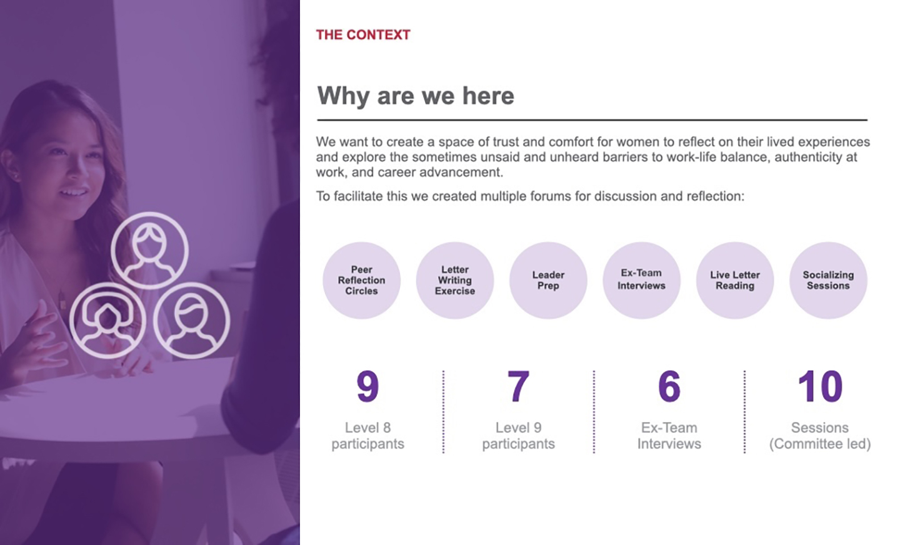
Scope and structure — six forum types, 33 participants, designed to reduce exposure at every stage
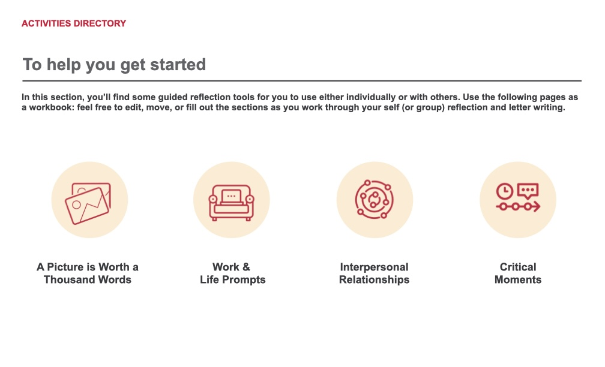
The reflective workbook — four activities designed so no one had to go first or speak before they were ready
What We Found
The safety problem wasn't incidental — it was structural
Women leaders described a consistent pattern: concerns raised were met with silence, dismissal, or the label of being "too emotional." Psychological safety wasn't a precondition we could assume. It was something that had to be actively designed for.
Flexibility existed on paper, not in practice
"Fake flexibility" — formal policies that permitted adjusted working arrangements, undermined daily by managers whose behaviour signalled that using them carried a cost. What was missing wasn't policy. It was accountability.
The path to director level was opaque by design
Promotion requirements described as vague, shifting, and inconsistently applied. An expectation of "crippling perfectionism" applied to women that didn't apply equally to peers.
The women who left told a more complete story
Every one of the talented women ended up advancing rapidly after moving laterally out of the team rather than up through it — invisible in the org chart but visible the moment you looked for it.
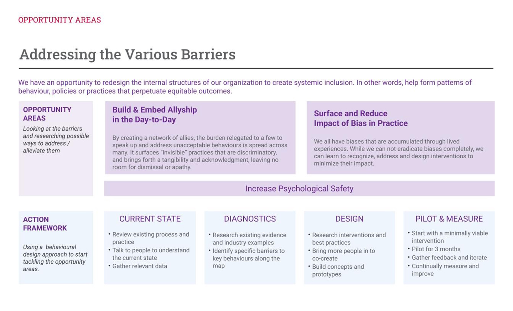
Opportunity areas and action framework presented to leadership.
What I Took From It
The most important design decision on this project happened before any research ran — recognizing that the original format wasn't just suboptimal, it was replicating the problem it was trying to solve. Asking people to be vulnerable in an unsafe container doesn't generate insight. It generates performance, or silence.
Methods & Tools
UX Delivery — Design Sprint — TD · 2023–2025
Two connected projects — a GIC rate exception tool and a RESL mortgage rate change platform — both colleague-facing tools that became proof of what design-led thinking can unlock in terms of efficiency, competitive advantage, and safeguarding a large bank.
$1.6B
in annual volume captured by the GIC tool (business partner projection)
500
capacity hours removed over five years
90%
reduction in cycle time: from multiple business days to same-day delivery in target state
The Brief
We were brought in to "consult" on a GIC rate exception project that already had a proposed solution and a development team. They had PowerPoint screens and requirements. What they didn't have was a clear picture of the problem those requirements were trying to solve. So we proposed a couple of workshops and a two-week design sprint — a short, focused exploration to pressure-test assumptions before anyone builds the wrong thing at scale. The sprint became the project.
My Role
Led both projects end to end. Ran design sprints alongside developers and stakeholders from day one. A service design approach translated complex pricing domain language into shared design vocabulary. Expanded scope on RESL when discovery revealed the Pricing Strategy team — the origin point of every rate change — had been left out of the brief entirely. The designs informed the requirements, not the other way around.
Outcome
The GIC tool shipped. Business partners projected the five-year impact: approximately 60 million incremental units, $165M–$1.6B in volumes, $5.9M in net interest income, 500 capacity hours removed, approximately $1.6B in annual volume captured. The VP of Platforms saw the results and redirected the team to the RESL project — a harder version of the same problem, at larger scale. RESL MVP1 in development, target Q4 2026.
The GIC Project: Designing Without Requirements
Branch investment advisors requesting a better GIC rate submitted exceptions through email and Excel. Average turnaround: 4 to 24 hours. In a world where clients make investment decisions in a single conversation, that's not a turnaround — it's a lost sale. Sixty percent of GIC purchases were going through the exception process. Twenty-four percent of requests were duplicates.
The design sprint approach was deliberate. When requirements are unclear and dependencies are in flux, a sprint forces the right conversations faster than a requirements-gathering process ever will. The core challenge wasn't technical — it was translational: the pricing team spoke in language that didn't map cleanly to design concepts. Getting to shared understanding required sitting with the complexity before proposing solutions.
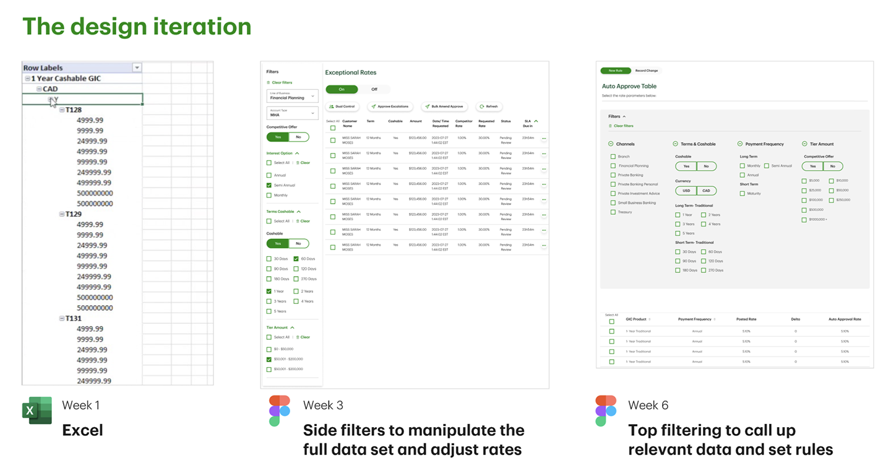
Design iteration — from Excel to purpose-built tool across six weeks.
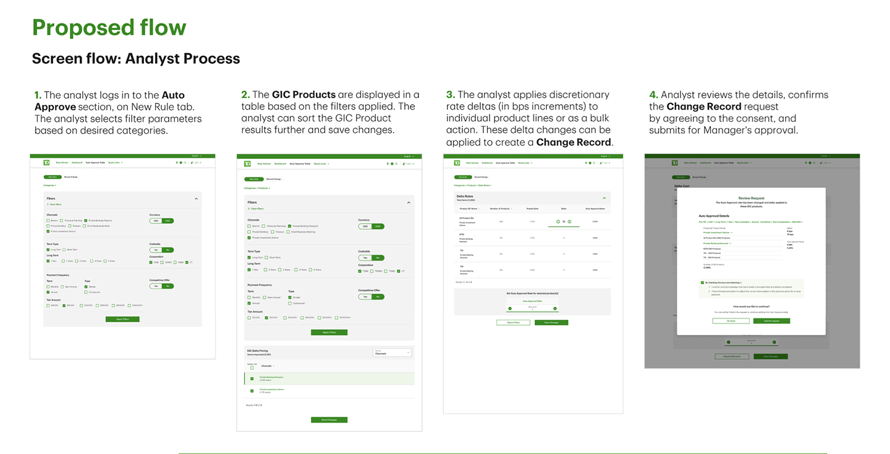
Analyst flow — the shipped screen sequence for GIC rate exception management.
The RESL Project: The Same Problem, Higher Stakes
RESL rate changes flow from Pricing Strategist to Analyst to Senior Pricing Manager or VP — through multiple Excel documents, email chains, and repeated manual data entry. Current turnaround: 3 to 5 business days. In a mortgage rate environment where competitors move in hours, that's not just inefficiency — it's competitive exposure. The manual process carries real financial risk: one error in 2024 alone resulted in a $200M loss. No audit trail, no standardization, dangerous dependency on the availability of specific people.
The organization had been framing this as a technical upgrade. The VP redirected us because it wasn't. Four workshops: problem statement definition, strategist journey mapping, a continuation session for partners who missed the second, and target state reimagination. Scope expanded mid-project when we discovered the Pricing Strategy team had been left out of the initial brief entirely. We pulled them in.
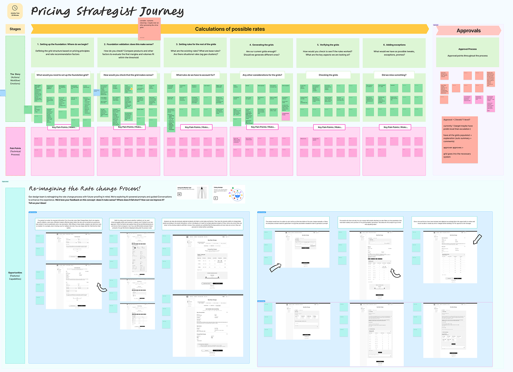
Pricing Strategist Journey — workshop artifact from the RESL co-design sprint.
What We Designed
Three flows: Strategist, Analyst, Approver. A centralized dashboard replacing the Excel and email chain. Progressive disclosure, reduced cognitive load, intentional checkpoints at high-consequence decision points. The screens consolidate a process distributed across disconnected tools: set business rules, initiate a rate change, input adjustments with alerts for conflicts, generate comparative grids, review and submit for approval. Target state includes conversational guided patterns and potential AI integration.
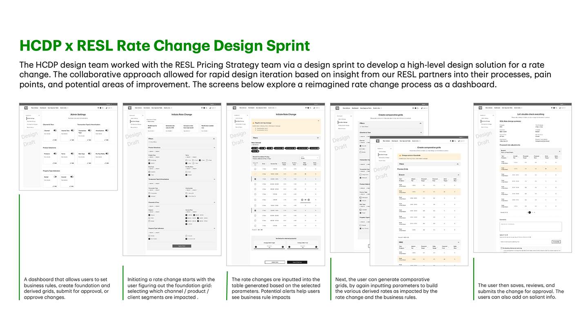
RESL screen designs — the rate change process consolidated into a centralized dashboard.
What This Work Is Actually About
Both projects are the same argument made twice. The design team's value wasn't in the screens. It was in arriving before the requirements were set, asking whether the right problem was being solved, and staying until the answer was clear.
Methods & Tools
Service Design — CIBC · 2022
How research across three cultures and two continents led to a content strategy grounded in lived experience — not institutional messaging.
70
clients, frontline staff, and stakeholders engaged across research and ideation
36
internal newcomers engaged as co-creators in ideation
333
prospect clients surveyed on content positioning and framing
The Brief
CIBC wanted to grow market share among newcomers — International Students and Temporary Foreign Workers — by understanding their financial needs from pre-arrival through to permanent residency. I led the Discover phase end to end and co-led the Make phase through to handoff.
My Role
Synthesis of 25 industry reports and 16 internal stakeholder interviews before speaking to a single client. 24 in-depth interviews with newcomers from China (Hong Kong and mainland), India, and the Philippines — deliberately not treating them as interchangeable. 30 frontline staff interviews across 14 banking centres. 4 external subject matter experts. 36 internal newcomers brought in as co-creators. Prototyping and testing, including in-market sessions with prospect clients in India before they'd arrived in Canada.
Outcome
Newcomer Stories greenlit — a content strategy built on real newcomer voices rather than institutional messaging. Three design principles developed for execution.
"You kept newcomers at the centre of everything you did — giving them a real voice as you built insights and solutions." — Senior Director
What We Did
Research began with a wide net — 25 industry reports and 16 internal stakeholder interviews — to surface assumptions already baked into the bank's newcomer offer before speaking to a single client. We then conducted 24 in-depth interviews with newcomers from China, India, and the Philippines, surfacing how cultural background shaped financial mental models, trust, and the networks people relied on for advice. Frontline staff interviews across 14 banking centres and four external subject matter experts — including the YMCA and academic researchers in financial exclusion — filled in the settlement picture. Thirty-six internal newcomers joined as co-creators in ideation. Two concepts moved into prototyping and testing, including a 333-person survey of prospect clients to refine content positioning.
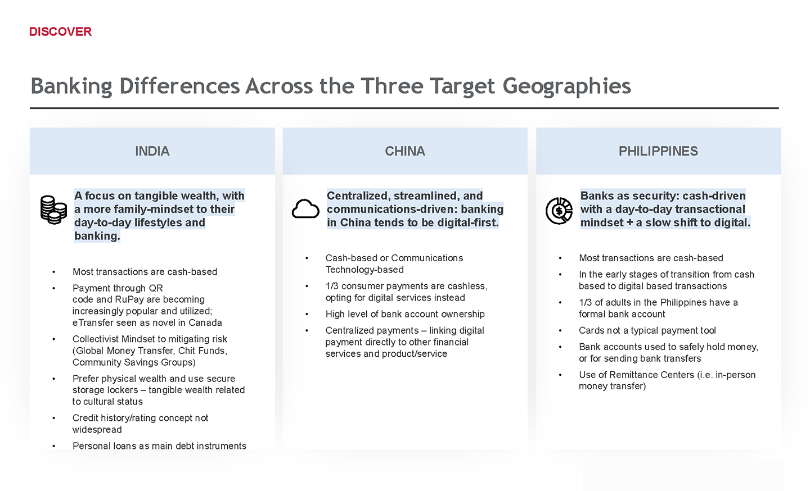
Banking behaviours across India, China, and the Philippines — why a single newcomer offer couldn't speak to all three.
What We Found
Newcomers trust people who've made the journey, not institutions that describe it
Information about banking in Canada was everywhere. What newcomers couldn't find was someone credible telling them what it was actually like — the things that surprised them, the mistakes they made, what they wished they'd known. Peer experience was the most trusted source of financial guidance, and the bank was entirely absent from that conversation.
The settlement journey is a scramble — and banking is one of many things happening at once
Newcomers arriving in Canada are simultaneously navigating housing, employment, language, social networks, and an entirely unfamiliar financial system. The bank was designing for a rational, sequential decision-maker. The reality was someone managing ten urgent things at once, making banking decisions under pressure with incomplete information.
Cultural context shapes financial behaviour in ways the bank wasn't accounting for
Clients from India, China, and the Philippines brought fundamentally different relationships with money, credit, and institutional trust. A single newcomer offer couldn't speak to all three — and the research made that visible.
Trust is built through community, not campaigns
Newcomers relied heavily on informal networks — friends who'd arrived before them, community groups, social media channels — to validate banking decisions. The opportunity wasn't to shout louder. It was to show up differently.
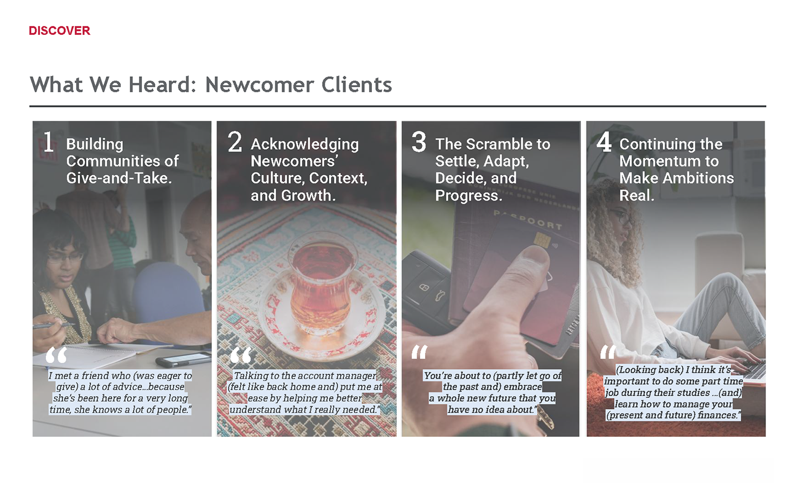
What we heard — four themes synthesized from 24 client interviews.
The Recommendation
Two concepts emerged from ideation and moved into testing. Newcomer Stories — using real newcomer voices across multiple formats to capture the lived experience of Canadian banking — and an Airport Welcome concept focused on the moment of arrival.
What clients responded to wasn't polished institutional content — it was specificity and recognizability. Newcomer Stories was greenlit. Three design principles guided its execution: lead with the newcomer's immediate experience to signal cultural understanding; focus on daily life and lessons learned rather than product features; and pair self-directed content with clear pathways to a human advisor.
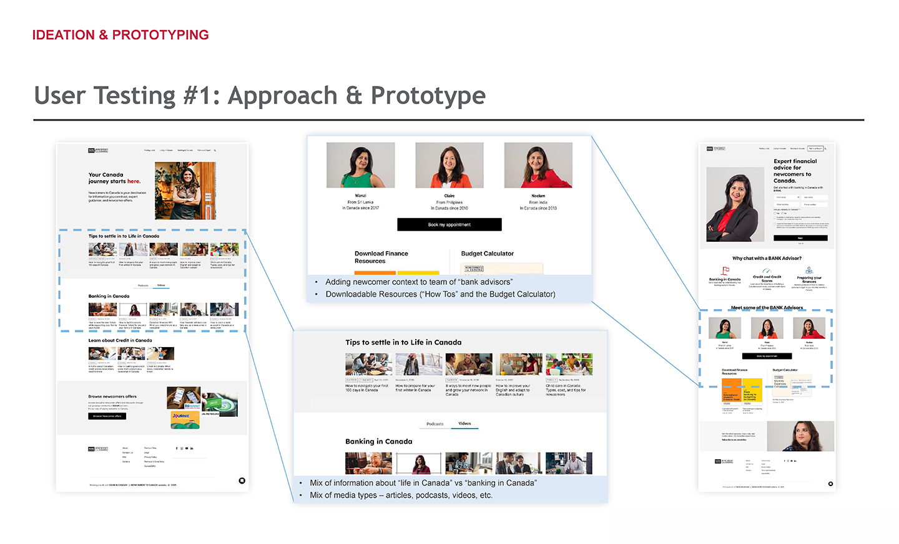
Newcomer Stories prototype — the content strategy concept tested with 36 newcomers and 333 prospect clients.
What I Took From It
The gap between what institutions think people need and what people are actually looking for is almost always a trust gap before it's an information gap. The bank had content. It had products. What it didn't have was credibility in the spaces where newcomers were actually making decisions — the WhatsApp groups, the Reddit threads, the advice from a friend who'd arrived two years earlier. Designing for that reality meant getting out of broadcast mode and into something that felt more like community.
Methods & Tools
Service Design — CIBC · 2020
What a year of research revealed about savings behaviour — and what it takes to help clients build better habits.
81
clients, frontline staff, and stakeholders engaged across research and ideation
113
clients tested concepts across 4 rounds of iterative prototyping
3
automated savings features brought forward for development
The Brief
Grow savings balances consistently and sustainably — without relying on promotional rates that attracted short-term money and created volatility — by understanding what clients actually needed and designing features that could support real behaviour change.
My Role
Led the Make and Do phases — prototype design, test plans, stakeholder engagement, and coaching Deposits partners through the methodology. Involved in the full Discover phase: research planning, participatory materials, interviews, and synthesis. Continued supporting business partners through the build phase to ensure implementation decisions reflected what the research had established.
Outcome
The project shifted the internal conversation from "how do we sell more savings products" to "how do we help clients actually save."
"We want to reduce reliance on mass campaigns and promotions that encourage 'hot money' and volatility. We want to understand what our clients really need." — Internal stakeholder
What We Did
Three layers. Ethnographic research with 30 clients across 7 cities and 3 provinces — in-home interviews using participatory tools including financial mental maps, life event cards, and savings timelines. Nine banking centre visits and 36 frontline staff interviews to understand how savings conversations were actually happening on the ground. Internal ideation generated nine concepts, which were refined across four rounds of prototyping and testing with 113 clients.
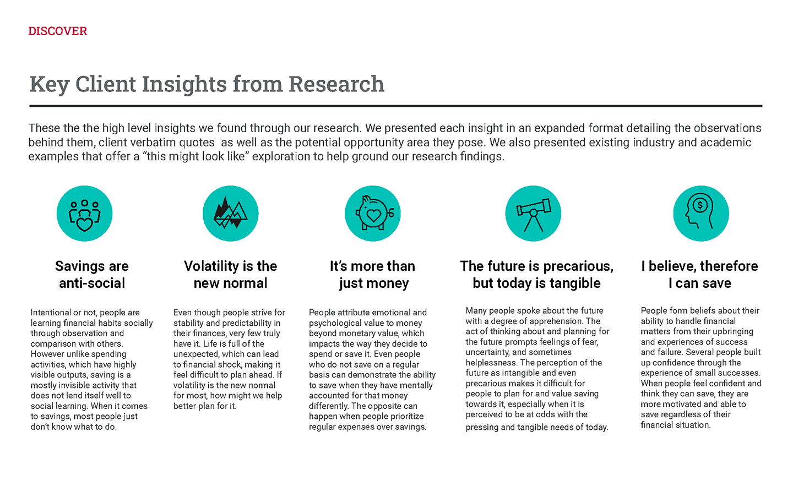
Five insight themes from 30 in-home client interviews across 7 cities and 3 provinces.
What We Found
Savings is emotional, not mathematical
Clients didn't struggle with savings because they lacked discipline or knowledge. They struggled because savings decisions are bound up in identity, anxiety, relationships, and life events that a product feature can't directly address — but can be designed around.
Automation reduces the friction of good intentions
The features that resonated most were ones that removed the need for a deliberate decision each time. Clients wanted to save — they just didn't want to think about it constantly. Automation aligned product behaviour with client intention.
Frontline conversations were inconsistent
Some advisors opened up rich conversations about savings goals and life context. Others defaulted to product features. The gap wasn't motivation — it was tools and time. Frontline needed a better starting point for the conversation, not a better script.
Staying Through the Build
Research findings are easy to erode when they meet implementation constraints. Being in the room through scoping calls, technology requirement sessions, and UX specifications meant we could push back when a decision was drifting away from the client reality we'd spent a year documenting. The handoff isn't the end of design's job on a project like this.
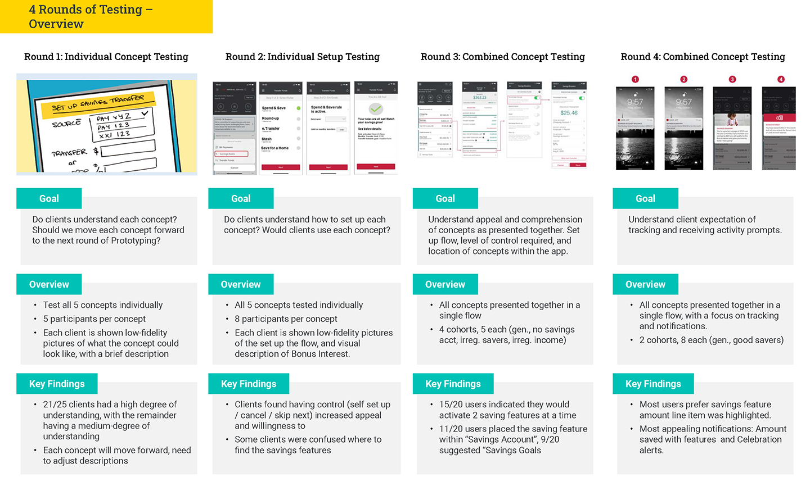
Four rounds of iterative prototype testing with 113 clients — from concept comprehension through to combined flow and notification design.
Methods & Tools
Strategy — TD · 2024
Research-based prioritization that surfaced a gap between what frontline advisors needed and what leadership assumed to be true.
25+
frontline staff engaged through workshops and branch interviews
70+
people collaborating across the bank
22+
interviews with leadership and SMEs across current and future state
The Brief
Retail advisors lacked a comprehensive platform to efficiently serve customers — toggling between systems, managing fifteen tabs simultaneously, losing time and confidence mid-appointment. The ask was a prioritized feature roadmap to inform F25 omnichannel investment. Leadership had a direction in mind. The research found something different.
My Role
Co-designed the research approach. Ran four of six workshops — my senior design manager covered the other two while I was in branches conducting in-context observations. Rotated team members through full-day branch visits so they understood what field research actually looks like. Synthesized findings into a prioritized roadmap. Co-presented to SVP-level leadership on November 8 — seven weeks from project kick-off on September 3.
Outcome
The research surfaced a significant gap between what frontline advisors prioritized and what platform and business leadership assumed. Leadership was surprised — and appreciated the honesty. They re-prioritized. TD subsequently stood up a dedicated frontline team, separate from customer and platform, focused specifically on the colleague experience the research had brought into focus.
"Our apps don't talk to one another. Look, I have 15 different tabs, forms and pop-ups open at the same time just to complete one application." — Branch Advisor
The Problem
Advisors were managing customer interactions across a fragmented ecosystem — 250+ systems, multiple admin apps, no unified customer view. The cognitive load wasn't just an efficiency problem. It was eroding the quality of advice and the confidence with which advisors could give it.
"When is my next mortgage payment? And I end up having to toggle three screens or go through admin apps... all the while they're sitting there looking at me awkwardly." — Branch Advisor
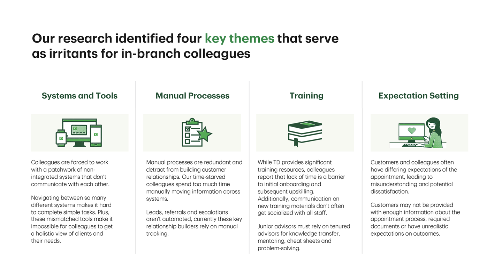
Four key themes surfaced from branch visits and stakeholder interviews.
What We Did
Three phases in seven weeks. First: alignment workshop, leadership and SME interviews, branch visits. Second: ideation around pain points and day-in-the-life journey mapping, affinity mapping to surface themes. Third: collaborative prioritization workshop, roadmap creation, validation with leadership and colleagues.
The branch visits were where the real research happened. Sitting with advisors in context — watching the tab-switching, the system-juggling, the moments where the tool failed and the advisor had to compensate — produced evidence that no workshop could have generated alone. I brought team members on a rotating basis. Seeing it once changes how you synthesize everything else.
What the Research Found
The prioritization ranking told the story. Frontline advisors ranked Merged Application System first — too many disconnected tools, too much cognitive load during appointments. Platform and business ranked it seventh. Advisors ranked Customer 360 Profile fourth. Platform and business ranked it first. Neither list was wrong. They were answering different questions. The research made that visible — and made it impossible to build a roadmap that served only one of them.
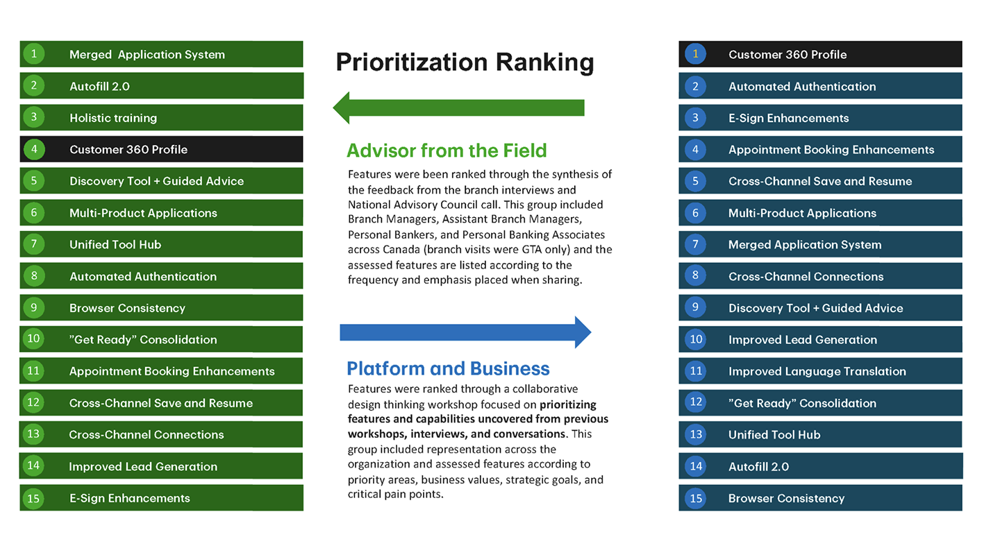
The prioritization gap — what frontline advisors needed vs what leadership assumed. Neither list was wrong; they were answering different questions.
Top Prioritized Features
Customer 360 Profile Data
A holistic view of customers' life cycles, centralized and accessible across every channel. Currently spread across 250+ systems. Advisors can't see the full picture of who they're advising.
Merged Application System
Too many disconnected tools requiring manual input and system-switching during customer appointments. The experience feels robotic rather than conversational.
Autofill 2.0
Customer data manually re-entered across multiple steps and applications. Information doesn't sync across tools, creating duplication and error risk.
Automated Authentication
Advisors manually verifying physical IDs, tracking cheques, making compliance decisions mid-appointment. High cognitive load, high error risk, poor customer experience.
What Happened After
The executive readout on November 8 landed in a pause. Leadership was surprised by the gap the research had surfaced. After a beat, they agreed to take it back. The roadmap was re-prioritized. TD subsequently restructured to stand up a dedicated frontline team — separate from customer and platform — focused specifically on colleague experience. Whether that decision traces directly to this work is hard to say with certainty inside an organization going through multiple reorgs simultaneously. The sequence, however, is clear.
Methods & Tools
UX Delivery — TD · 2024
Migrating TD's legacy unsecured personal loan application to a new platform — and using the mandate as an opportunity to fix what was broken.
65%
improvement in conversion rate — 39.9% vs 24.2% on the legacy experience
110%
of expected new account sales in the first two months post-launch
26,500
applications started in the first three months post-launch
The Brief
Migrate TD's legacy unsecured personal loan application to EasyApply Evolution, meet regulatory requirements, and deliver by Q3 FY24. That was the mandate. I led the design delivery team without leaving my service design thinking at the door.
My Role
Designed and facilitated six co-design workshops across lines of business. Directed research, attended all twelve user evaluation sessions, and rewrote the agency report to capture the nuance the transcript missed. Built three user flows mapped to archetypes developed from direct session observation. Introduced intentional friction at the moments where comprehension mattered more than speed. MVP shipped Q3 FY24.
Outcome
MVP launched November 2024. In the first two months, 26,500 customers started the application and overall conversion ran at 39.9% — up from 24.2% on the legacy experience. New account sales tracked at 110% of forecast. The more telling number: 74% of sales came through the non-preapproved flow, the longer and more complex journey. The design introduced clarity and confidence throughout — moving customers who started with uncertainty all the way through to commitment, not just the easy wins.
"All team members consistently kept the customer experience as the priority." — Product Owner
A delivery mandate doesn't preclude asking why. The legacy uLoan experience was long, confusing, and consequential — users making financial decisions they didn't fully understand in an interface designed to obscure rather than clarify. The migration was the opportunity to fix that, not just move it.
The Process in Numbers
6
co-design workshops across lines of business
12
moderated user evaluation sessions
3
user flows mapped to distinct customer archetypes
What We Were Working With
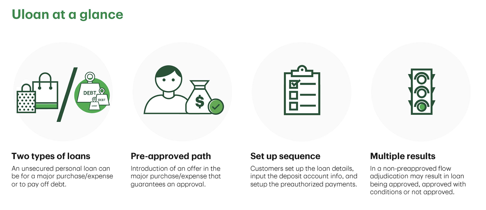
uLoan at a glance — the product structure the redesign had to work within
The Complexity
A loan application sits at the intersection of competing pressures: customer expectations, regulatory compliance, and stakeholders from product, compliance, legal, and technology who hadn't worked in a human-centred process before. The co-design workshops weren't just about generating better solutions. Stakeholders who help build something have a different relationship to it — they're less likely to relitigate decisions later.
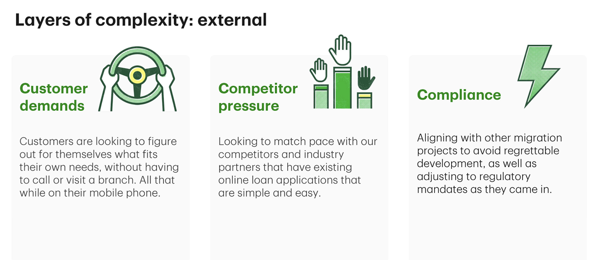
External pressures shaping the project — customer self-serve expectations, competitor parity, and shifting regulatory requirements
What We Learned About Users
User research was conducted with an external agency across twelve moderated evaluation sessions. My team attended every session. The agency report that came back was thorough but not useful — too long, treating isolated observations from single users as action items alongside genuine patterns. I rewrote it. Being present in the sessions meant we could distinguish signal from noise. That judgment doesn't come from a transcript.
From the research we developed three composite characters built from direct user observation: Evie borrowing to cover a major purchase. Colton consolidating debt across multiple institutions. Page working with a pre-approval offer, trying to understand what accepting it would and wouldn't allow her to do. That last archetype was where the most important design problem lived.
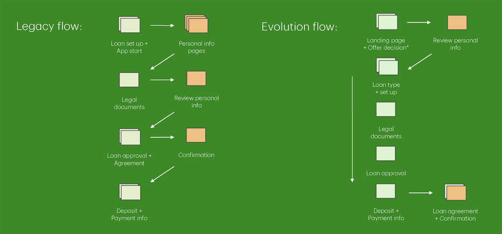
Legacy vs. evolution flow — the structural reordering that made the whole application completable on mobile
The Design Problem: Transparency vs. Simplicity
At the entry point of the uLoan application, a user chooses between a major purchase loan and debt consolidation. Existing customers may be pre-approved — but accepting that offer closes the door to consolidation. Declining opens the adjudication path with no guarantee of approval. Consequential choices, not always legible ones.
The default UX response is to reduce friction everywhere. We introduced intentional friction at the moments of highest consequence — additional screens that slowed users down precisely where comprehension mattered most. Transparency and simplicity pull against each other. Testing across twelve sessions helped us find where the balance actually lived, not where we assumed it did.
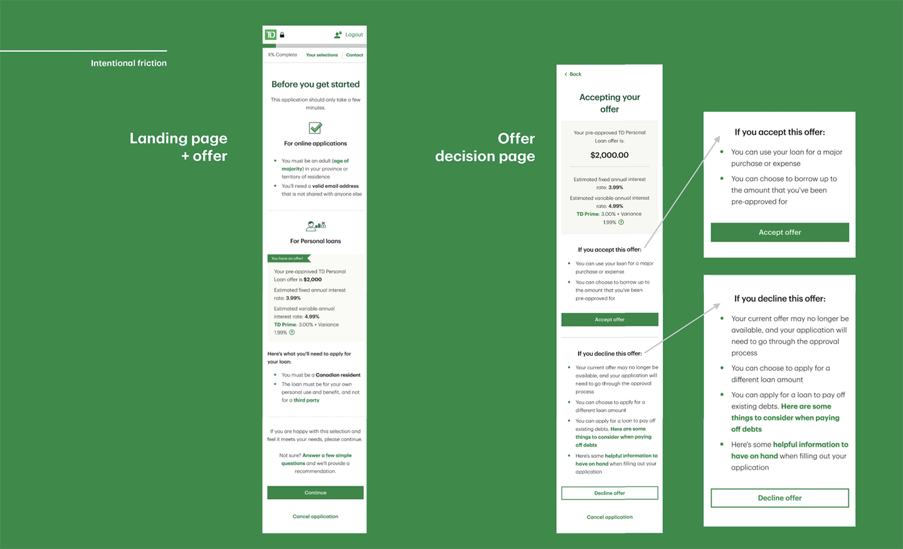
Intentional friction in practice — the landing page and offer decision screens designed to slow users down where comprehension mattered most
What We Built
Three user flows, each mapped to a distinct scenario. Across all three: unnecessary steps removed, supportive instruction added at the moments users needed language the interface wasn't giving them, and intentional friction placed at the decision points that mattered. Future phases include new-to-bank customers, save-and-resume functionality, and multi-product applications.
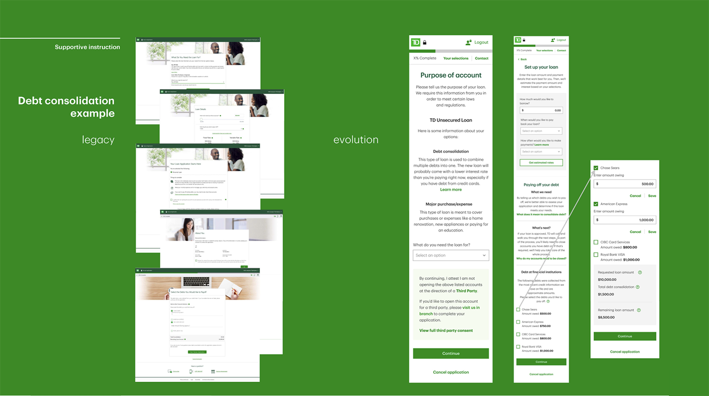
Debt consolidation: legacy vs. evolution — the same scenario, redesigned for clarity and mobile completion
Methods & Tools
UX Delivery — TD · 2025–2026
Reducing a preapproved credit card application from 8-10 pages to 2 — and setting a design standard that has since traveled across the team's credit products.
2
pages — the entire preapproved application, down from 8-10
4
credit products the 2-click pattern has since been applied to
$8M
incremental revenue the business case is tracking at launch
The Brief
Existing TD customers who had already been preapproved for a credit card were being asked to complete an 8 to 10 page application before accepting the offer — steps that existed because the flow was designed for new customers, not for people the bank already knew. The result: frustration, abandonment, and a conversion rate sitting around 67%.
My Role
Led the work as HCD Lead for the Agile Release Train covering credit products — running this alongside four to five concurrent projects. Conducted a design audit and stakeholder reviews to identify what was genuinely required versus what had accumulated by default. Consolidated the application to two pages.
Outcome
MVP1 launching Q2 2026. The 2-click preapproved flow became an established pattern for preapproved customers — now extending across credit products. Applied to multi-product onboarding, document upload, preapproved overdraft protection, and credit limit increase. Product owners reference it by name: did you 2-click it? That's not a feature. That's a pattern.
The Problem
The human-centred problem statement was simple: we're making people prove themselves to us when we've already decided to approve them. The existing flow required information customers might not have on hand, at a moment when the decision was already made. The drop-off wasn't a mystery — it was a predictable consequence of a flow designed for the wrong audience.
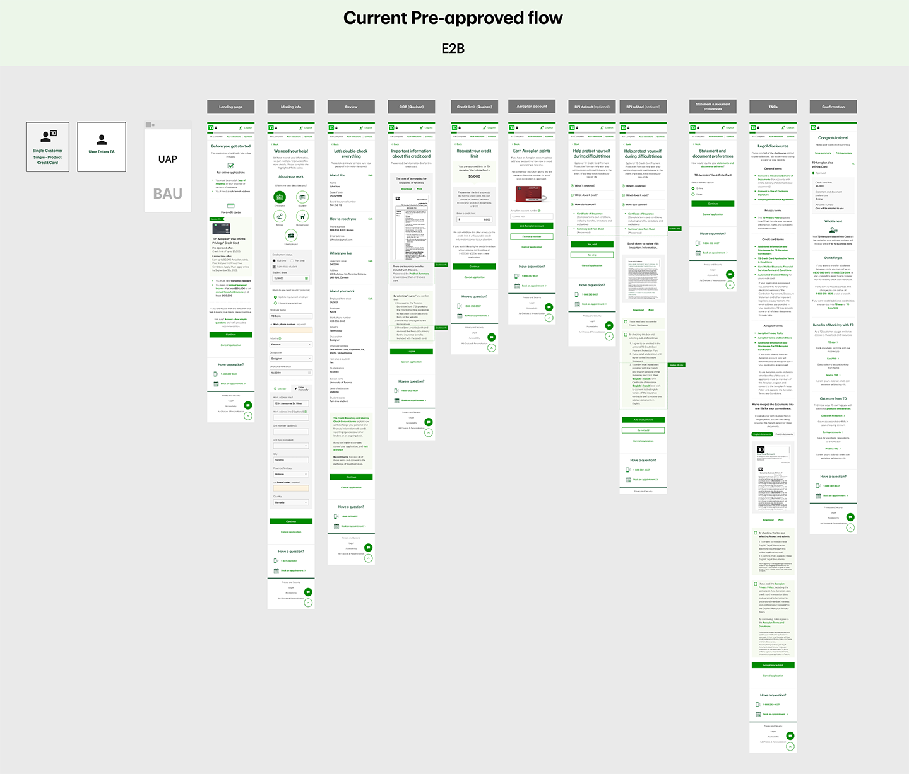
The existing flow — 8 to 10 pages designed for new customers, applied to people the bank had already approved
The Design Rationale
The redesign focused the landing page on what mattered and deferred everything else: unnecessary steps removed, related content consolidated, terms and conditions made accessible without overwhelming. Terms and conditions made accessible without overwhelming. MVP1 used BAU components due to technical and time constraints — missing information presented prior to the landing page, terms and conditions on the legal page. MVP2 embeds missing information directly in the landing page and introduces automated decision-making.
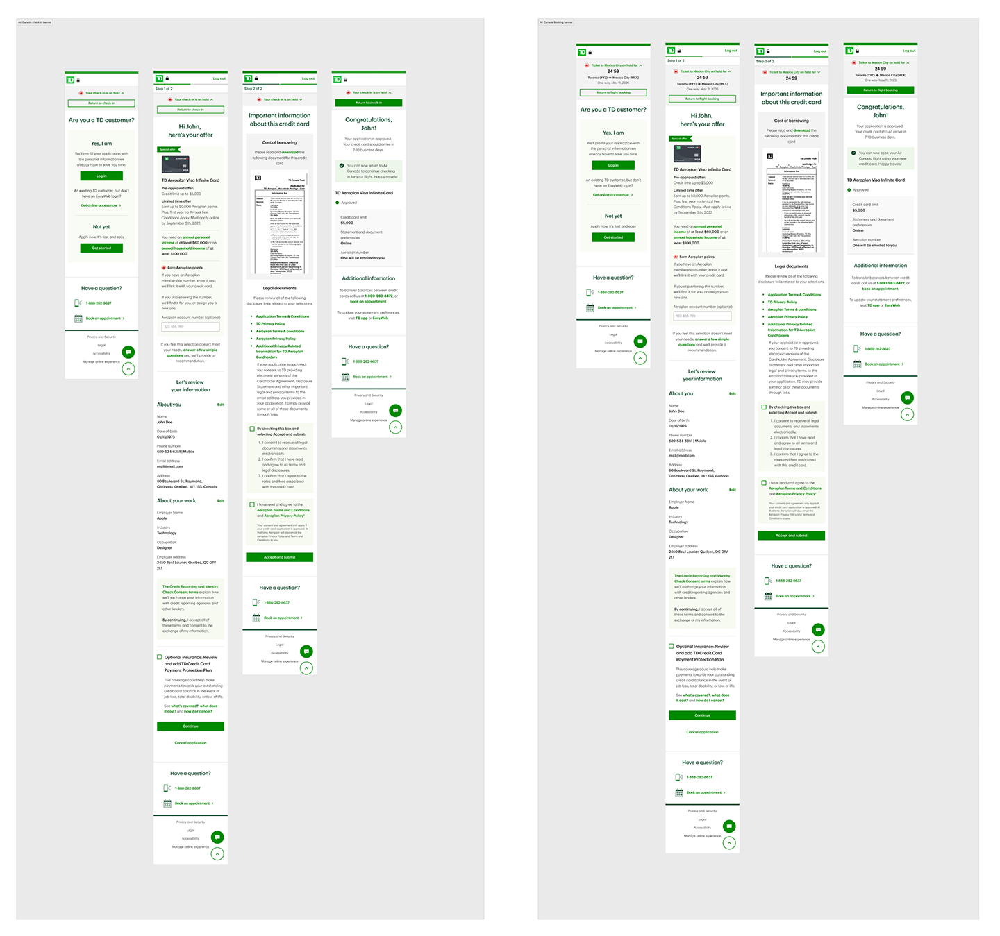
The redesign — MVP1 and MVP2 flows, consolidated to two pages
Why It Traveled
The 2-click pattern worked because it was grounded in a principle, not just a page count: collect only what's essential, at the moment it's needed, for a customer you already know. That principle applies across preapproved products. Once it was an approved direction, applying it consistently was a natural extension — not a separate design effort for each product.
Methods & Tools
Service Design — CIBC · 2023
A cross-organizational service design project to understand why mortgage clients were leaving CIBC mid-term — and what the bank could do earlier to keep them. Partnered with Enterprise Process Engineering to size each opportunity area quantitatively.
34
interviews across clients, frontline, and stakeholders
63
real client calls listened to before attrition
12
lines of business engaged
The Brief
CIBC was losing mortgage clients mid-term — before renewal, before maturity. I led the project from research planning through to recommendations presented to the RESL leadership team. The organizational complexity was the harder problem: mortgage clients interact with at least six different teams across the bank, most operating in silos.
My Role
Three layers of research: interviews with clients who had already left, interviews with frontline advisors and contact centre agents, and listening to the actual calls attrited clients made in the year before they switched. Partnered with Enterprise Process Engineering to size each opportunity area quantitatively. Identified four opportunity areas and presented them to leadership with a clear priority recommendation.
Outcome
One of four opportunity areas moved forward. Recognition from the RESL Business Director for the scope and quality of the work — specifically the depth of research and clarity of the path forward.
"Your energy and eagerness to do the right thing for the client is infectious." — RESL Business Director
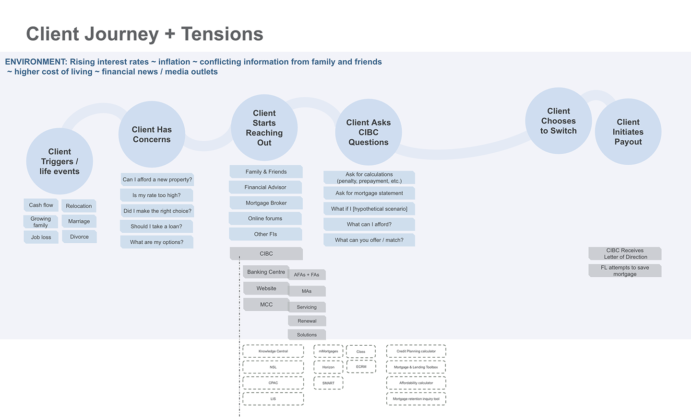
The client journey — six stages, six teams, one relationship in the client's mind
What We Found
The signal existed — it just wasn't being read
Clients who left were calling the contact centre an average of 134 days before they attrited — asking about payout penalties, prepayment amounts, mortgage statements. Early warning signals, months before switching. The bank's retention process only triggered after receiving the discharge notice. By then it was too late.
Clients didn't know where to go — and neither did frontline
Six different teams handled different aspects of a mortgage but clients experienced it as one relationship with one bank. When they called with a complex question, they were transferred multiple times. The CIBC.com FAQ gave two different phone numbers for the same renewal question.
Frontline were set up to transact, not to advise
Contact centre agents were inconsistent — some probed to understand what the client really needed, others answered the surface question and moved on. Advisors were managing multiple systems that didn't agree with each other, sometimes receiving better rates from another CIBC channel than the one they had access to.
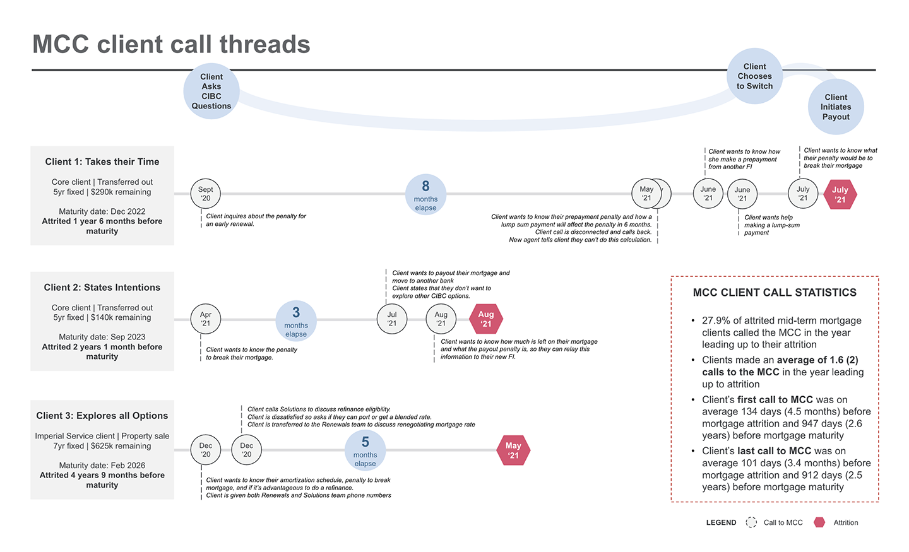
Call centre threads for three client archetypes — 27.9% of attrited clients called the MCC in the year before leaving, first call averaging 134 days before attrition
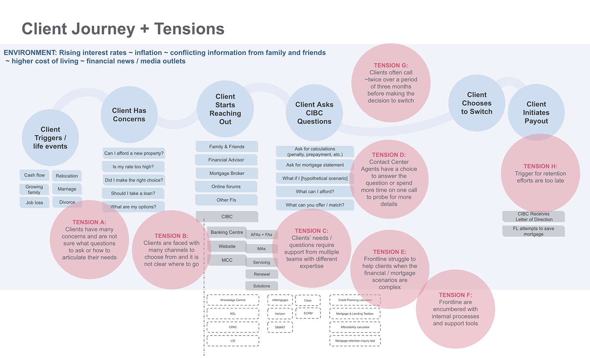
The same journey with tensions surfaced — eight friction points distributed across the client experience and the bank's internal structure
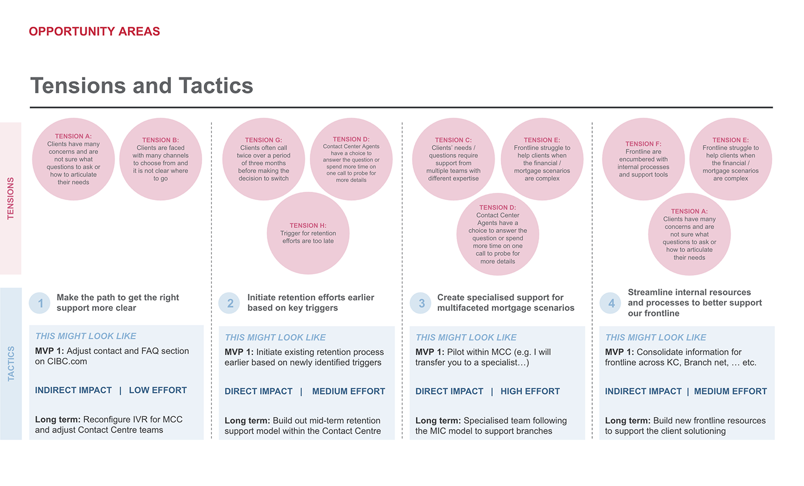
Four opportunity areas, mapped from tensions to tactics — with impact and effort ratings for each
The Recommendation
Initiate retention efforts earlier, based on the call triggers identified. Clients were telling the bank they were considering leaving — just not in those words. The fix wasn't new technology or a new product. It was listening differently to what was already happening.
"We only talk to clients when they're ready to renew. Every other time they are left in the dark. We don't show them the love." — Internal stakeholder
What I Took From It
Large organizations often have the information they need to act — it's just distributed across teams who aren't talking to each other. The role of service design in that context isn't to invent new solutions. It's to synthesize what's already known, make the system visible, and help people see what they couldn't see before because they were each only looking at their part of it.
Methods & Tools
Foresight — TD · 2024
Most design teams work from what's known. This project was about what's uncertain — teaching foresight methodology inside a major bank and using it to map the forces that could reshape the assisted banking channel before the roadmap we were building had a chance to deliver.
The Brief
I was the only person on the team with formal foresight training — a master's in Strategic Foresight & Innovation that most of my colleagues didn't know about. When it became clear that the Advisor Desktop Modernization project was answering the wrong time horizon, I proposed running a parallel foresight engagement. Not what advisors need now, but what the assisted banking channel might look like in five to ten years, and what forces could reshape it before we even shipped. I built a crash course, adapted the methodology for a banking context, and ran the project as a coaching exercise for the second pod I was leading.
My Role
Designed the methodology and translated it for a five-year institutional horizon. Taught the team how foresight works and why. Oversaw signal gathering across technology, financial services trends, and socio-economic indicators. Developed the critical uncertainties framework and four scenarios. Created a strategic vision mapping the team's experience principles against technological trends to identify where TD had opportunity to lead, where it needed to catch up, and where it should watch and wait.
Outcome
The foresight work established something more lasting than a roadmap: a format and standard for how the team contextualizes the space before starting a project. Concise, sourced signal scanning — not a detailed trends analysis — became the model. Teams pull from the original slide where relevant and find their own signals where they don't. The format has traveled into insurance work. The practice outlasted the project.
Why Foresight, Why Now
The Advisor Desktop project was focused on the present state — what's broken, what to build first. The Strategic Futures work ran alongside it to ask a different question: what assumptions are we building on, and how confident should we be in them? The two projects were designed to inform each other. One without the other produces either a roadmap with no horizon or a horizon with no roadmap.
The Methodology
Signal gathering across two categories: technology and financial services trends, and socio-economic signals. Sources included ten innovation and financial industry trend reports, HCD journey research, government publications, and academic papers. From the signals we identified two critical uncertainties — the rate and scale of TD's technological adoption, and the degree of socio-economic stability in the environment the bank operates in. Those two axes generated four plausible futures on a 2x2 matrix.
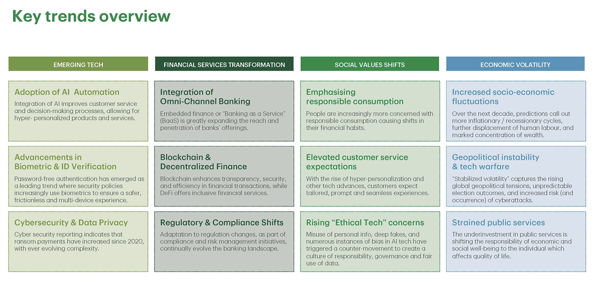
Key trends overview — twelve signals across four domains that fed the scenario framework
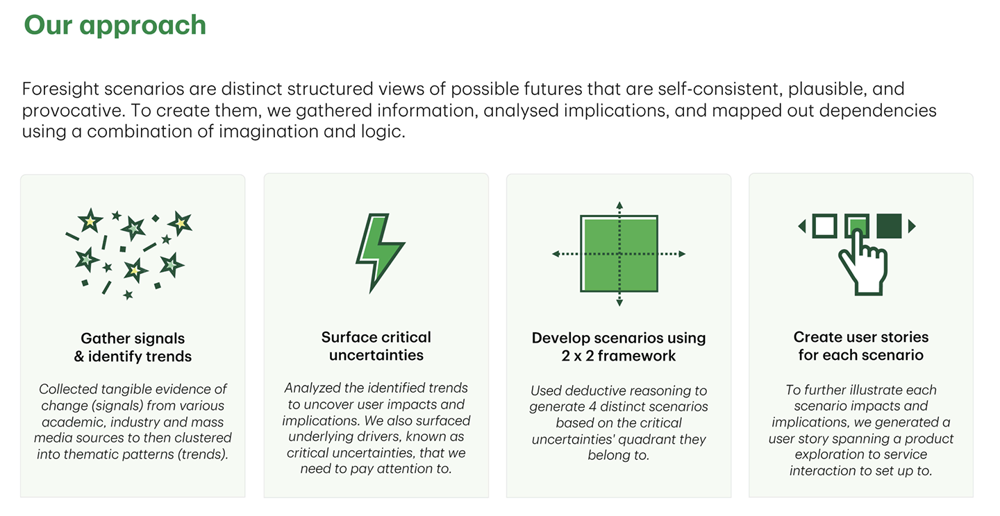
The foresight methodology — four steps from signal scanning to scenario user stories
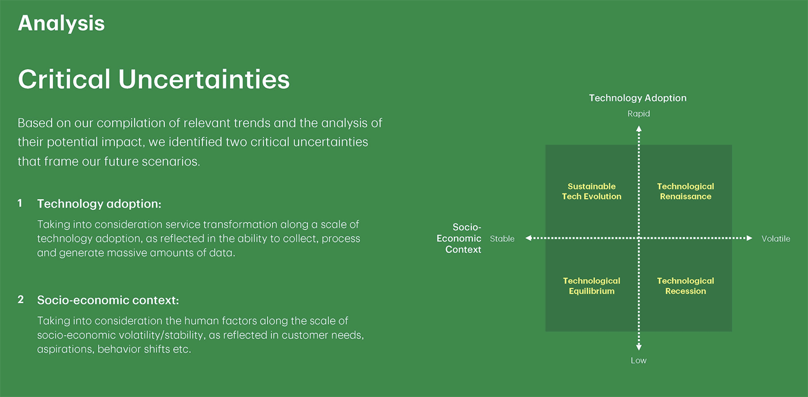
The two critical uncertainties and the four scenarios they generate
The Four Scenarios
Technological Renaissance
Rapid tech adoption in a stable socio-economic environment. Advisors empowered by seamless, AI-assisted tools. Customers expect personalized, data-driven guidance. The assisted channel is transformed but not replaced.
Sustainable Tech Evolution
Measured adoption, stable environment. Technology improves incrementally. The human element of banking remains central. Advisors augmented rather than automated.
Technological Equilibrium
Moderate adoption, moderate uncertainty. Organizations balance innovation with caution. Customer expectations outpace delivery in some areas; trust becomes a differentiator.
Technological Recession
Constrained adoption in a high-uncertainty environment. Digital fatigue, regulatory pressure, and economic instability slow transformation. Human advisors become more valuable, not less.
What It Connected To
Each scenario was rendered as an assisted onboarding experience — what does a branch interaction look like in this future, what does the advisor need, what does the customer expect? The strategic vision mapped the team's experience principles against the technological trends to identify strategic opportunity areas. Most of the recommended next steps didn't happen — reorgs intervened. What did happen was quieter and more lasting: a shared frame for thinking about where the work is going. Foresight doesn't always produce a deliverable. Sometimes it produces a way of seeing.
Methods & Tools
Research — OCAD University · 2018
Submitted to OCAD University in partial fulfillment of the requirements for the degree of Master of Design in Strategic Foresight & Innovation. © Merwad Abdallah & Lesley-Ann Foulds, 2019.
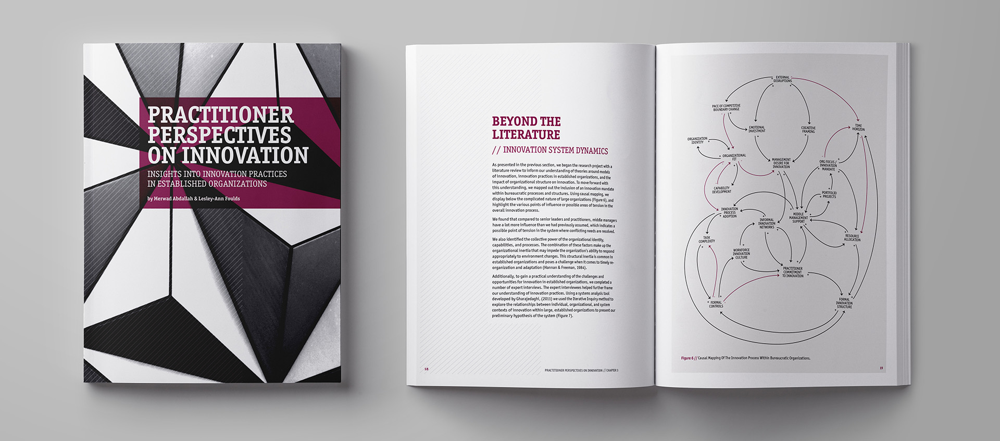
76
survey participants across regulated industries
23
expert and practitioner interviews conducted
74
academic and industry sources reviewed
The Question
My research partner and I were both working in large, heavily regulated organizations while completing a master's in Strategic Foresight and Innovation. We wanted to understand whether the gap between what our program taught us about innovation and what we were experiencing every day was inevitable — or something that could be designed around.
My Role
My research partner and I started with two separate projects. What pulled us together wasn't structural overlap — it was the conversations we kept having in co-working sessions. We were both facing the same pressure: trying to make innovation work inside large organizations that weren't designed for it. Her context was nuclear power, mine was a bank; yet the frustration was identical. The conversations became more interesting than either project. We combined forces and finished a complete academic project with practical and relevant recommendations neither of us would have reached alone.
Outcome
Four design principles for sustainable innovation in established organizations: clarity of purpose, strategic intent, values enacted, and reflective capacity. That conclusion hasn't left me. Every design practice I've built since has been an attempt to create the conditions the research described.
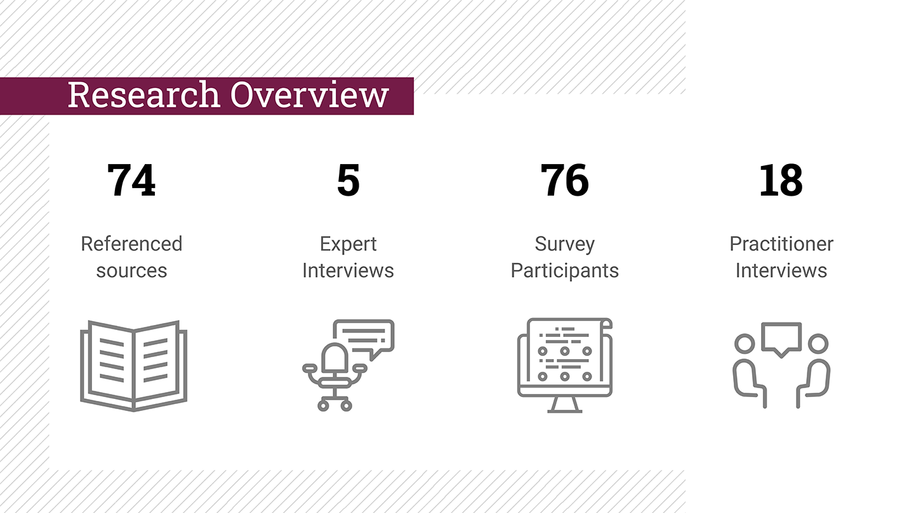
Mapping Maturity — innovation process maturity mapped against organizational context axis.
What We Found
The core finding wasn't about process or methodology. It was about values. The gap between what organizations said they believed about innovation and what their actual systems rewarded and punished was wide, and it was structural. Three metaphors captured it:
Our hands are tied
Organizations pulled between the need to adapt and legacy structures that quietly prevent it. Risk tolerance is low, time horizons are mismatched, and projects get resourced only when outcomes can be predicted — which is precisely when innovation stops being innovation.
What does innovation have to do with our work
Innovation practice sandboxed away from the core business, with no shared definition of what it's supposed to deliver and practitioners left to constantly re-justify their existence to the lines of business they're trying to serve.
Not all innovation efforts are created equal
The burden placed on individuals rather than systems. Practitioners expected to deliver results and build organizational capacity simultaneously — carrying personal reputational risk for work that benefits the organization collectively.
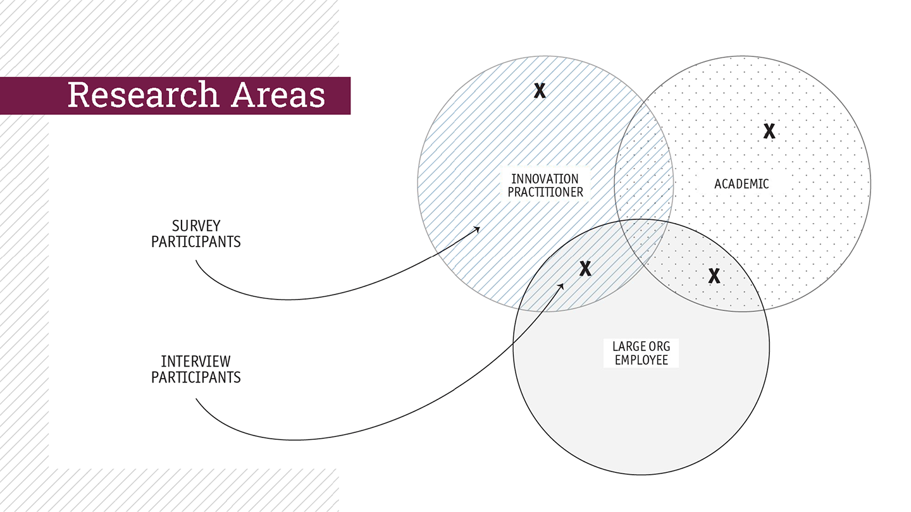
Practitioner drawings — participants sketched their own innovation journeys, revealing the gap between ideal process and lived reality.
Why It Still Matters
Sustainable innovation in established organizations requires intervention at the values level — not just new processes or frameworks, but a genuine shift in what gets rewarded, what gets resourced, and what counts as legitimate work. This MRP named the problem. Everything that came after has been an attempt to solve it.
Methods & Tools
Foresight — OCAD University · APF 1st Place Graduate Group Award · 2018
A full-cycle foresight project exploring North American food production to 2050 — from environmental scan through scenario development to a live immersive experience.
In collaboration with Kate Kudelka, Alana Boltwood & Ashley Spiegel — Foresight Studio, MDes Strategic Foresight & Innovation, OCAD University, Toronto
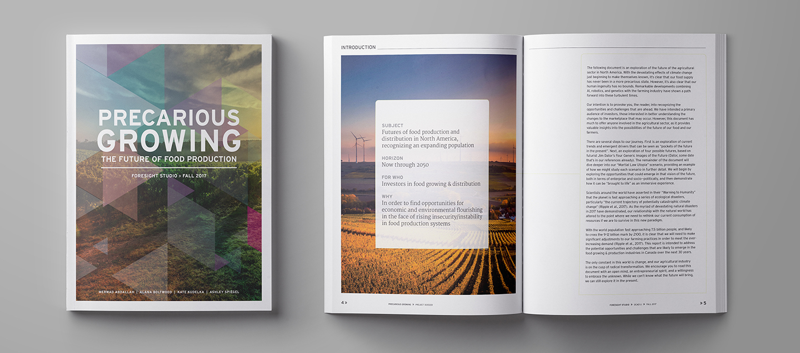
The Brief
The project began with the UN Sustainable Development Goals as a starting point for topic selection. My lens was food growing and production — the supply side of a system under compounding pressure from climate instability, corporate consolidation, declining public trust, and emerging technology that could either democratize or further centralize how food gets grown and distributed. Our primary audience was investors in food growing and distribution — a deliberate choice to make the work applicable in the real world and to force specificity about risk, timing, and opportunity.
My Role
The farming research that underpins the project: collecting signals and trends to form a STEEPV analysis (Society, Technology, Economy, Environment, Politics, and Values). Owned the Discipline scenario — Martial Law Utopia — end to end: the world-building, the narrative, the internal logic. Led the document design across both the APF submission and the full 72-page dossier. Co-built the immersive experiential future, including props, ration bars, uniform design, and performing in the live scenario.
Outcome
First place, Association of Professional Futurists Graduate Group Award, 2018. The methodology established here — signals to trends to scenarios to immersive world — became the template I later adapted for Strategic Futures: Assisted Banking at TD.
How We Built It
A broad environmental scan across academic sources, current events, popular culture, and mass media — deliberately wide, looking for weak signals alongside established trends. A sensemaking exercise surfaced 16 trends mapped against the STEEPV framework. Those trends became the raw material for scenario development using Jim Dator's Four Generic Images of the Future as scaffold — Growth, Collapse, Discipline, Transformation — forcing exploration of the full range of possibility rather than clustering around the probable.
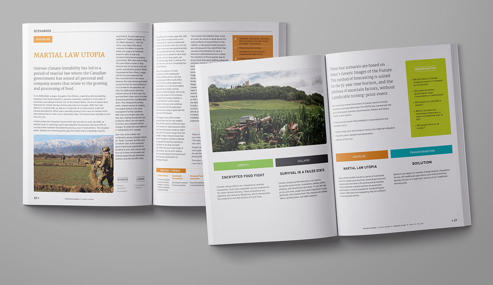
The four scenarios — each developed from Jim Dator's Generic Images of the Future framework.
The Four Scenarios
Encrypted Food Fight — Growth
Climate change disasters accelerate technological innovation in agriculture, but all breakthroughs are patented and controlled by a single corporation. Food security improves. Food equity collapses.
Survival in a Failed State — Collapse
Climate change and oil depletion destabilize governments and supply chains. Small cooperative communities become the primary unit of food production. Resilience is hyper-local. The formal economy has largely failed.
Martial Law Utopia — Discipline
Intense climate instability triggers political crisis. A newly elected government nationalizes all food production, seizes corporate assets, suspends intellectual property rights, and begins rationing. Austere, utilitarian, surveilled — and by most measures, it works.
Soilution — Transformation
Biotechnology produces a soil additive that allows crops to adapt to climate volatility, restoring traditional agriculture. A government-academic-industry partnership distributes the innovation equitably. Society returns to a culture of growing.
Making It Real: The Immersive Experience
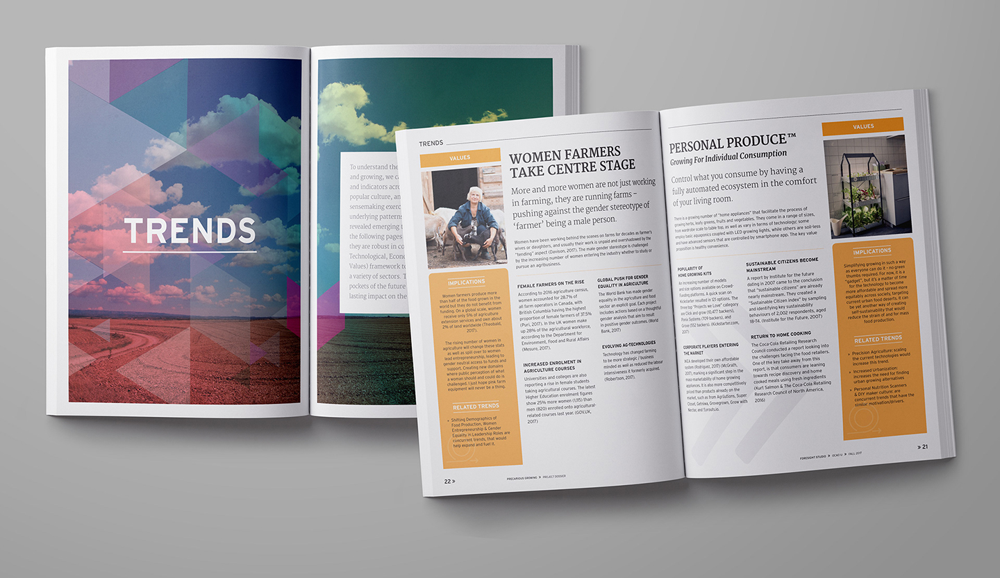
Nutri-Paq, Parsnip-Prune flavour — one of the physical props designed for the immersive future.
Scenario documents provoke intellectual engagement. Immersive experiences provoke something harder — emotional investment in a future that doesn't exist yet. We brought the Martial Law Utopia to life as a live experiential future. Participants arrived as 19-year-old recruits on their first day of Crown Service. Every prop was designed to the internal logic of the world: ration bars, uniforms, scent masks, a planted dissenter.
Crown Service recruitment poster — the world brought to life.
During debrief, participants reported genuine emotional responses: camaraderie with their assigned division, a flicker of national pride at Canada's imagined accomplishments, unease at the surveillance mechanisms threaded through the scenario. You can read about a future. You can also inhabit it — and inhabiting it changes what you do with the information.
On Foresight
Foresight is sensemaking — an attempt to exercise some control over the uncontrollable by holding multiple futures simultaneously. Not prediction. Not a plan. A structured way of sitting with uncertainty.
Methods & Tools